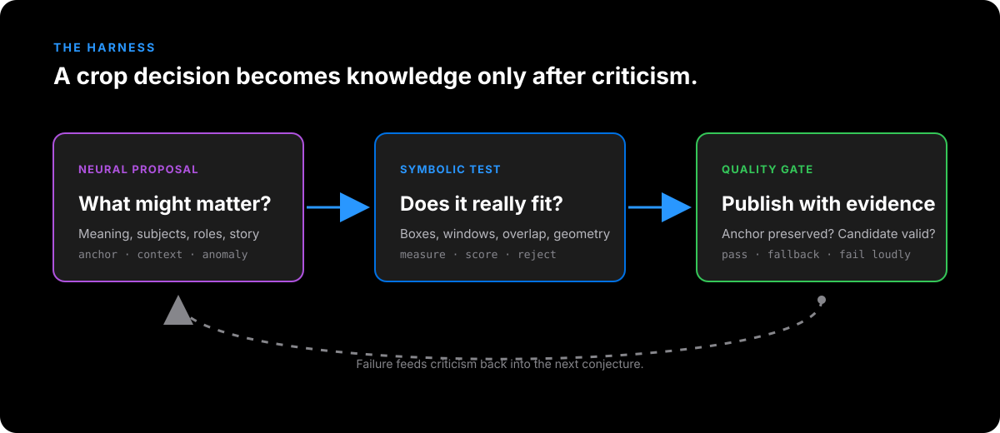
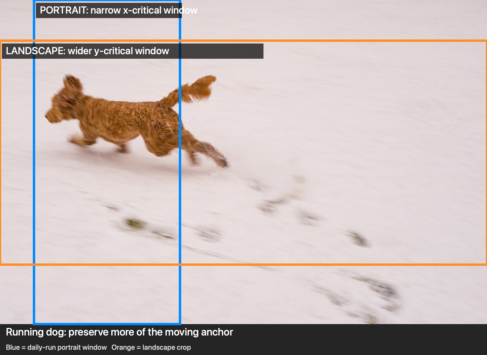
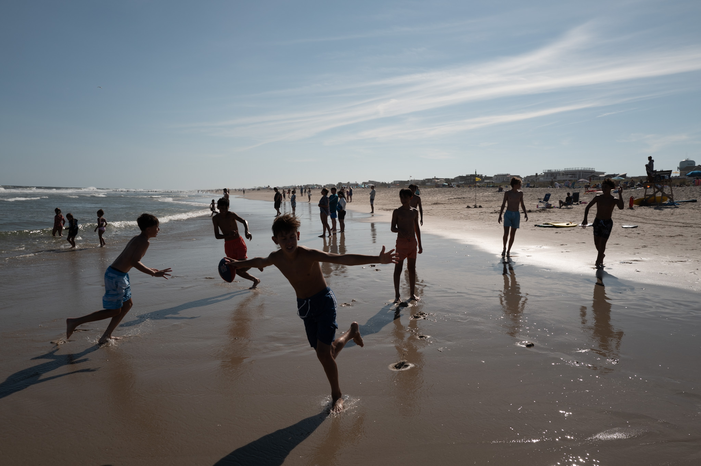

<meta charset="utf-8">
<meta name="viewport" content="width=device-width, initial-scale=1">
<meta name="description" content="The problems, pivots, and crop geometry behind a local neural-symbolic daily photo pipeline.">
<meta name="author" content="Karl and Shubham Mehrish">
<meta name="category" content="AI &amp; Mind">
<title>The Daily Photo Pipeline: Problems, Pivots, and Crop Lines</title>
<style>
:root{--blue:#0071e3;--bright:#2997ff;--purple:#af52de;--green:#34c759;--ink:#1d1d1f;--muted:rgba(29,29,31,.66);--light:#f5f5f7;--white:#fff;--dark:#000;--card:#1c1c1e;--border:rgba(0,0,0,.1);--font:system-ui,-apple-system,BlinkMacSystemFont,"Segoe UI",sans-serif;--mono:ui-monospace,SFMono-Regular,Menlo,Monaco,Consolas,monospace}
*{box-sizing:border-box;margin:0;padding:0;-webkit-font-smoothing:antialiased}body{font-family:var(--font);background:var(--light);color:var(--ink);line-height:1.58;letter-spacing:-.012em}section{display:flex;justify-content:center;padding:82px 22px}.container{width:100%;max-width:820px}.dark{background:#000;color:#fff}.white{background:#fff}.light{background:var(--light)}.hero{padding-top:94px;padding-bottom:68px}.back-link{display:inline-flex;color:var(--bright);text-decoration:none;font-size:14px;font-weight:650;margin-bottom:44px}.back-link:hover{text-decoration:underline}.overline{text-transform:uppercase;color:var(--bright);letter-spacing:.14em;font-size:12px;font-weight:750;margin-bottom:15px}h1{font-size:clamp(42px,7vw,68px);line-height:1.02;letter-spacing:-.052em;font-weight:680;max-width:790px;text-wrap:pretty}.subtitle{color:rgba(255,255,255,.68);font-size:21px;line-height:1.42;max-width:700px;margin-top:24px}.meta{display:flex;flex-wrap:wrap;gap:28px;margin-top:44px;padding:20px 0;border-top:1px solid rgba(255,255,255,.17);border-bottom:1px solid rgba(255,255,255,.17);color:rgba(255,255,255,.66);font-size:14px}.meta strong{display:block;color:#fff;text-transform:uppercase;letter-spacing:.07em;font-size:10px;margin-bottom:4px}.abstract-wrap{padding-top:44px;padding-bottom:44px}.abstract{background:#fff;border:1px solid var(--border);border-radius:16px;padding:31px 34px;box-shadow:0 12px 34px rgba(0,0,0,.045)}.abstract-label{color:var(--blue);text-transform:uppercase;letter-spacing:.1em;font-size:12px;font-weight:750;margin-bottom:14px}.abstract p{font-size:19px;line-height:1.55;color:rgba(29,29,31,.84)}h2{font-size:34px;line-height:1.1;letter-spacing:-.035em;font-weight:680;margin-bottom:23px}h3{font-size:22px;line-height:1.2;margin:35px 0 12px}p{font-size:17px;margin-bottom:21px}strong{font-weight:720}em{font-style:italic}.callout{border-left:3px solid var(--blue);padding:3px 0 3px 20px;margin:31px 0;color:var(--blue);font-size:19px;font-style:italic}.dark .callout{border-color:var(--bright);color:var(--bright)}.quote{border-left:3px solid rgba(0,113,227,.55);padding-left:20px;margin:29px 0;color:var(--muted);font-style:italic}.contrast-grid{display:grid;grid-template-columns:repeat(2,1fr);gap:18px;margin-top:34px}.contrast-card{border-radius:14px;padding:25px;background:var(--light);border:1px solid var(--border)}.dark .contrast-card{background:var(--card);border-color:rgba(255,255,255,.1)}.contrast-card h3{margin:0 0 10px;font-size:20px}.contrast-card p{font-size:15.5px;color:var(--muted);margin:0}.dark .contrast-card p{color:rgba(255,255,255,.68)}.contrast-card.neural{border-top:3px solid var(--purple)}.contrast-card.symbolic{border-top:3px solid var(--blue)}.skill-list{display:grid;grid-template-columns:repeat(3,1fr);gap:14px;margin:31px 0}.skill-item{background:var(--card);color:#fff;border-radius:12px;padding:19px}.skill-item strong{display:block;color:var(--bright);font-size:14px;margin-bottom:6px}.skill-item span{font-size:14px;color:rgba(255,255,255,.7)}.steps{counter-reset:step;list-style:none;margin-top:29px}.steps li{counter-increment:step;position:relative;padding:0 0 27px 62px;margin-bottom:24px;border-left:1px solid rgba(0,113,227,.25)}.steps li:before{content:counter(step,decimal-leading-zero);position:absolute;left:-21px;top:-3px;width:40px;height:40px;border-radius:50%;display:grid;place-items:center;background:var(--blue);color:#fff;font-size:12px;font-weight:750}.steps li:last-child{border-left-color:transparent}.steps h3{margin:0 0 7px;font-size:20px}.steps p{margin:0;font-size:16px;color:var(--muted)}.run-steps .steps h3{color:#fff}.run-steps .steps p{color:rgba(255,255,255,.72)}.run-steps .steps li{border-left-color:rgba(41,151,255,.42)}.run-steps .steps li:last-child{border-left-color:transparent}.figure{margin:36px 0 12px}.figure img{display:block;width:100%;height:auto;border-radius:15px;box-shadow:0 15px 40px rgba(0,0,0,.13)}.figure figcaption{font-size:13px;color:var(--muted);margin-top:11px;line-height:1.45}.dark .figure figcaption{color:rgba(255,255,255,.58)}.diagram{margin:34px 0 8px;background:#000;border-radius:16px;padding:14px;box-shadow:0 18px 45px rgba(0,0,0,.22)}.diagram img{display:block;width:100%;height:auto;border-radius:10px}.diagram figcaption{font-size:13px;color:rgba(255,255,255,.58);padding:12px 9px 3px}.data-table{width:100%;border-collapse:collapse;margin:27px 0 10px;font-size:14px}.data-table th{text-align:left;color:var(--muted);font-size:11px;text-transform:uppercase;letter-spacing:.08em;border-bottom:1px solid var(--border);padding:10px}.data-table td{border-bottom:1px solid var(--border);padding:13px 10px;vertical-align:top}.data-table code{font-family:var(--mono);font-size:12px;color:var(--blue)}code{font-family:var(--mono);font-size:.88em;color:var(--blue)}pre{background:#f0f0f2;border-radius:11px;padding:19px 21px;overflow:auto;margin:21px 0 25px;font-family:var(--mono);font-size:13px;line-height:1.65;color:#353539}.dark pre{background:#1c1c1e;color:#d8d8dc}.lesson{background:linear-gradient(135deg,#eef6ff 0%,#fff 100%);border-top:1px solid rgba(0,113,227,.1)}.lesson-text{font-size:24px;line-height:1.4;letter-spacing:-.025em}footer{padding:50px 22px;text-align:center;color:var(--muted);font-size:13px;border-top:1px solid var(--border)}footer p{font-size:13px;margin-bottom:8px}footer a{color:var(--blue);text-decoration:none}footer a:hover{text-decoration:underline}.draft{display:inline-block;border:1px solid rgba(0,113,227,.3);border-radius:99px;padding:7px 12px;color:var(--blue);font-size:11px;font-weight:750;letter-spacing:.08em;text-transform:uppercase;margin-bottom:24px}
@media(max-width:680px){section{padding:58px 18px}.hero{padding-top:64px}.back-link{margin-bottom:34px}.subtitle{font-size:18px}.meta{gap:18px 24px}.abstract{padding:24px}.abstract p{font-size:17px}h2{font-size:29px}p{font-size:16px}.contrast-grid,.skill-list{grid-template-columns:1fr}.steps li{padding-left:54px}.diagram{margin-left:-4px;margin-right:-4px;padding:8px}.lesson-text{font-size:21px}.data-table{font-size:12px}.data-table th,.data-table td{padding:10px 6px}}
@media(prefers-reduced-motion:reduce){*{scroll-behavior:auto!important}}
</style>


<section class="dark hero"><div class="container">
<a class="back-link" href="index.html">← Back to Briefing</a>
<div class="draft">Draft · not published</div>
<div class="overline">AI &amp; Mind</div>
<h1 data-sync-id="sync-0">The Daily Photo Pipeline: Problems, Pivots, and Crop Lines</h1>
<p class="subtitle" data-sync-id="sync-1">A small photography project became a lesson in neuro-symbolic systems, error correction, and why a harness is more trustworthy than a one-shot LLM answer.</p>
<div class="meta"><div><strong>Authors</strong>Karl and Shubham Mehrish</div><div><strong>Version</strong>Expanded edition</div><div><strong>Read time</strong>12 min</div><div><strong>Status</strong>Local draft</div></div>
</div></section>
<section class="light abstract-wrap"><div class="container"><div class="abstract"><div class="abstract-label">In brief</div><p data-sync-id="sync-2">When a wide, landscape photograph is placed on a tall, portrait phone screen, most of its horizontal content disappears. The daily photo pipeline decides what should survive by combining neural perception, symbolic geometry, photographic composition rules, and explicit quality gates. The result is not an AI oracle. It is a small error-correction system.</p></div></div></section>
<section class="white"><div class="container body-copy">
<h2 data-sync-id="sync-3">The small problem that became an engineering project</h2>
<p data-sync-id="sync-4">Every morning, a new photograph from my collection appears on a tiny web page designed for my iPhone. The page is deliberately simple: one image, full screen, no controls competing with the photograph. The simplicity hides an awkward geometric fact. Most photographs are landscape images, while the phone is a tall portrait rectangle.</p>
<p data-sync-id="sync-5">When a 3:2 landscape photograph is fitted into an iPhone 17 Pro portrait viewport (402 × 874 CSS pixels), only about <strong>30.6% of the source width</strong> is visible. The entire height remains available, but nearly seventy percent of the horizontal scene disappears.</p>
<div class="callout">Which part of this photograph is the photograph?</div>
<p data-sync-id="sync-6">A centre crop is easy. A meaningful crop is not. The computer has to answer a photographer's question: which subject gives the frame its identity, and how much context can survive around it?</p>
<h3 data-sync-id="sync-7">The first conjecture: the centre is probably good enough</h3>
<p data-sync-id="sync-8">The original implementation used a conventional <code>object-fit: cover</code> image and a manually chosen <code>object-position</code>. The first instinct was to centre the image. That works when the subject is central, but it is not a general theory of composition. A person at the edge, a boat on the horizon, or a small animal crossing the frame can vanish completely.</p>
<p data-sync-id="sync-9">The failure was not a coding bug. The code was faithfully implementing an inadequate explanation: <em>the middle of the rectangle is the important part.</em> Photographers do not generally crop that way. They look for the element that gives the frame its identity.</p>
</div></section>
<section class="light"><div class="container body-copy">
<h2 data-sync-id="sync-10">Why the obvious answers failed</h2>
<div class="contrast-grid"><div class="contrast-card symbolic"><h3 data-sync-id="sync-11">The mathematical crop</h3><p data-sync-id="sync-12">Measure brightness, contrast, and colour, then centre on the result. This is deterministic, but a bright empty sky can outweigh a small dark figure. The calculation knows where visual activity is; it does not know what the photograph is about.</p></div><div class="contrast-card neural"><h3 data-sync-id="sync-13">The one-shot AI crop</h3><p data-sync-id="sync-14">Ask one large model to inspect the photograph and return coordinates. It can understand a scene, but it may give vague positions or invent a description when image delivery fails. A fluent answer is not evidence that the model saw the pixels.</p></div></div>
<h3 data-sync-id="sync-15">Failure one: the mathematical crop is reliable but blind</h3>
<p data-sync-id="sync-16">The pipeline reduces each image to a 100 × 100 grid and gives every cell a weight:</p>
<pre>weight = 0.5 × local contrast
       + 0.3 × colour saturation
       + 0.2 × unusual luminance</pre>
<p data-sync-id="sync-17">The weighted centre of mass is deterministic. It tells us where the strongest edges, colours, and tonal departures are concentrated. But a bright sky can outweigh a small dark figure; a reflection can outweigh the object reflected; and a glowing window can become the centre even when the person beside it is the subject.</p>
<p data-sync-id="sync-18">The centroid became a <strong>quantitative anchor</strong>, not the final crop decision.</p>
<h3 data-sync-id="sync-19">Failure two: the vision model invents an answer</h3>
<p data-sync-id="sync-20">The obvious replacement was to ask a vision-capable language model to inspect each image and return crop coordinates. This produced more human-sounding answers, but not more trustworthy ones. The model gave phrases such as “slightly left of centre” rather than measurable positions.</p>
<p data-sync-id="sync-21">Some image requests also failed before the model received the pixels. Large originals became oversized Base64 payloads; static temporary paths triggered caching problems; and the model responded to an empty or stale image with confident descriptions. A New York skyline became a red poppy, a wet street, or a bottle of tequila depending on the surrounding context.</p>
<p data-sync-id="sync-22">That was the decisive refutation. A model that cannot distinguish “I saw this” from “I can construct a plausible description” cannot be the sole editor of the photographs.</p>
<div class="callout">Pure mathematics is reliable but blind. Pure AI is imaginative but untrustworthy. Either one alone is a bad editor.</div>
</div></section>
<section class="dark"><div class="container body-copy">
<div class="overline">The first major pivot</div><h2 data-sync-id="sync-23">From one intelligence to two</h2>
<p data-sync-id="sync-24">The architecture separated the work into two different kinds of intelligence:</p>
<div class="contrast-grid"><div class="contrast-card neural"><h3 data-sync-id="sync-25">Neural intelligence</h3><p data-sync-id="sync-26">Proposes meaning. A local vision model identifies people, animals, structures, crowds, foreground objects, and the scene's likely anchor.</p></div><div class="contrast-card symbolic"><h3 data-sync-id="sync-27">Symbolic intelligence</h3><p data-sync-id="sync-28">Enforces consequences. Deterministic code calculates visible source windows, checks bounding-box containment, scores candidates, and rejects impossible crops.</p></div></div>
<p class="callout" data-sync-id="sync-29">Neural intelligence decides what may matter. Symbolic intelligence decides where it is and whether the crop works.</p>
<p data-sync-id="sync-30">The neural model is asked, “What might matter?” It is not asked to perform exact coordinate geometry. The symbolic layer is asked, “What can actually fit?” It is not asked to understand a beach, a dog, or a sunset.</p>
<figure class="diagram"><figcaption data-sync-id="sync-31">The harness turns uncertain proposals into testable decisions. A failed crop becomes criticism for the next conjecture.</figcaption></figure>
</div></section>
<section class="white"><div class="container body-copy">
<h2 data-sync-id="sync-32">From estimated boxes to grounded boxes</h2>
<p data-sync-id="sync-33">Even after the vision model began returning structured JSON, its coordinates were still estimates. An estimated box is not a measurement merely because it is written in a JSON field.</p>
<p data-sync-id="sync-34">The next change introduced an independent grounding stage using Grounding DINO-T. The vision model supplies labels such as “boy in blue shorts reaching forward” or “lifeguard tower.” The detector searches the image and produces its own boxes. If the primary anchor cannot be localized, the run stops rather than publishing a crop based on an unverified description.</p>
<div class="quote">Let one system make a useful conjecture, but let a different mechanism test the physical consequence of that conjecture.</div>
<h2 data-sync-id="sync-35">The skill behind the system</h2>
<p data-sync-id="sync-36">The pipeline also needed a theory of what counts as a good crop. That knowledge became the <em>visual-composition-weight</em> skill. It was assembled from composition principles, Bryan Peterson's <em>Learning to See</em>, and failures encountered during debugging.</p>
<p data-sync-id="sync-37">The skill identifies nine drivers of visual weight: people and animals, sharpness, contrast, saturation, placement, isolation, size, shape complexity, and repetition. It also distinguishes four roles:</p>
<div class="skill-list"><div class="skill-item"><strong>Anchor</strong><span>The element that gives the photograph its identity.</span></div><div class="skill-item"><strong>Context</strong><span>The surrounding material needed to understand the anchor.</span></div><div class="skill-item"><strong>Anomaly</strong><span>An isolated pattern-breaker that may add narrative energy.</span></div><div class="skill-item"><strong>Background mass</strong><span>Crowd, texture, or repetition that may be visually large but semantically secondary.</span></div><div class="skill-item"><strong>Visual weight</strong><span>The combined pull created by contrast, colour, focus, size, and position.</span></div><div class="skill-item"><strong>Critical review</strong><span>Claims must survive independent checks.</span></div></div>
<pre>primary anchor &gt; essential context &gt; focal anomaly &gt; background mass</pre>
<p data-sync-id="sync-38">The skill is not a mystical source of machine taste. It is a readable conjecture about taste. Because it is written down, it can be criticised, revised, and tested.</p>
</div></section>
<section class="light"><div class="container body-copy">
<h2 data-sync-id="sync-39">From a single crop to display-aware geometry</h2>
<p data-sync-id="sync-40">The crop is not a property of the photograph alone. It is a relationship between the photograph and the display.</p>
<pre>portrait:  402 × 874  — iPhone 17 Pro portrait
landscape: 874 × 402  — iPhone 17 Pro landscape</pre>
<p data-sync-id="sync-41">For a landscape source in portrait mode, the full source height is visible and the horizontal axis is critical. For the same source in landscape mode, the full source width is visible and the vertical axis becomes critical. The same photograph therefore needs different crop lines depending on how the phone is held.</p>
<p data-sync-id="sync-42">The geometry engine generates candidates separately for each profile: anchor only; anchor plus context; anchor plus anomaly; and all three together. Each candidate has a visible source window. The system checks overlap with measured boxes before the judge can select it.</p>
<figure class="figure"><figcaption data-sync-id="sync-43"><strong>Sunset:</strong> blue shows the narrow portrait window; orange shows the wider landscape window. The source image is unchanged, but the critical crop axis changes with the display.</figcaption></figure>
<p data-sync-id="sync-44">The warm orange band on the horizon is the visual anchor. Portrait mode asks which vertical slice should preserve it. Landscape mode keeps the whole width and instead decides how much sky and water should balance around the horizon.</p>
<figure class="figure"><figcaption data-sync-id="sync-45"><strong>Running dog:</strong> the blue portrait window moves left to preserve the moving anchor; the orange landscape window uses the available width and controls the vertical placement.</figcaption></figure>
<p data-sync-id="sync-46">The dog is partly blurred and surrounded by bright snow. A purely mathematical method could be attracted to the broad high-luminance field. The semantic stage identifies the dog as the primary anchor, and the grounding stage confirms its measured box. In portrait mode, the scarce horizontal width must be spent on the animal rather than empty snow.</p>
</div></section>
<section class="white"><div class="container body-copy">
<h2 data-sync-id="sync-47">What one morning's run actually produced</h2>
<p data-sync-id="sync-48">A recent run selected a beach photograph with a boy in blue shorts reaching forward. The pixel centroid was <code>(49%, 43%)</code>. The semantic analysis found the boy's measured box at approximately:</p>
<pre>left 31.27%   top 45.21%
right 57.20%  bottom 88.98%</pre>
<p data-sync-id="sync-49">The result shows why the two cores must cooperate:</p>
<table class="data-table"><thead><tr><th data-sync-id="sync-50">Display</th><th data-sync-id="sync-51">Position</th><th data-sync-id="sync-52">Visible source window</th><th data-sync-id="sync-53">Decision</th></tr></thead><tbody><tr><td data-sync-id="sync-54">Portrait</td><td data-sync-id="sync-55"><code>42% 50%</code></td><td data-sync-id="sync-56"><code>29.14%–59.75%</code> width; full height</td><td data-sync-id="sync-57">Anchor only; boy remains fully visible</td></tr><tr><td data-sync-id="sync-58">Landscape</td><td data-sync-id="sync-59"><code>50% 87%</code></td><td data-sync-id="sync-60">Full width; <code>26.87%–95.98%</code> height</td><td data-sync-id="sync-61">Anchor plus both context boxes</td></tr></tbody></table>
<p data-sync-id="sync-62">The portrait crop cannot include the distant lifeguard tower without losing too much of the boy. The landscape crop can include the full width and move the vertical window down to preserve the boy, beach, and context.</p>
<figure class="figure"><figcaption data-sync-id="sync-63"><strong>The morning run:</strong> the primary anchor is the boy reaching toward the camera. The measured crop must preserve his face, body, outstretched arm, and enough wet sand to explain the movement.</figcaption></figure>
</div></section>
<section class="dark run-steps"><div class="container body-copy">
<h2 data-sync-id="sync-64">How one morning's run works</h2>
<ol class="steps"><li data-sync-id="sync-64"><h3 data-sync-id="sync-65">Select the photograph</h3><p data-sync-id="sync-66">The system scans the personal photo pool, consults its history, and selects the next image that has not yet been shown.</p></li><li data-sync-id="sync-67"><h3 data-sync-id="sync-68">Calculate the visual centre</h3><p data-sync-id="sync-69">The image is reduced to a small grid. Code measures contrast, colour, and unusual brightness or darkness, then calculates a physical reference point.</p></li><li data-sync-id="sync-70"><h3 data-sync-id="sync-71">Ask a local vision model to describe the scene</h3><p data-sync-id="sync-72">A local model identifies meaningful elements and assigns each a role, approximate location, and confidence. Uncertainty triggers another pass.</p></li><li data-sync-id="sync-73"><h3 data-sync-id="sync-74">Measure the model's claims</h3><p data-sync-id="sync-75">An independent detector receives the proposed labels and draws its own boxes. Estimated coordinates are not treated as measurements.</p></li><li data-sync-id="sync-76"><h3 data-sync-id="sync-77">Build possible crops</h3><p data-sync-id="sync-78">The geometry layer calculates what each phone orientation can actually show and creates candidate windows.</p></li><li data-sync-id="sync-79"><h3 data-sync-id="sync-80">Let an editor choose among valid options</h3><p data-sync-id="sync-81">A stronger reasoning model applies the hierarchy: preserve identity first, context second, drama third.</p></li><li data-sync-id="sync-82"><h3 data-sync-id="sync-83">Run the quality gate</h3><p data-sync-id="sync-84">The chosen crop is checked against the measured anchor. If it cannot preserve the anchor, the run falls back or fails rather than publishing silently.</p></li><li data-sync-id="sync-85"><h3 data-sync-id="sync-86">Publish with evidence</h3><p data-sync-id="sync-87">The page receives the crop position while a report, QA summary, and preview record what happened.</p></li></ol>
</div></section>
<section class="light"><div class="container body-copy">
<h2 data-sync-id="sync-88">Why the harness beats one big LLM call</h2>
<p data-sync-id="sync-89">Delegating the entire task to one large model is simple, but it creates an oracle. If the result is wrong, the error boundary is invisible. Did the model fail to see the image, misidentify the anchor, estimate coordinates badly, misunderstand <code>object-fit: cover</code>, or simply prefer another composition?</p>
<p data-sync-id="sync-90">The harness makes those questions separable. Each stage produces a structured result for the next. Neural claims are measured by another instrument, crop choices are constrained by geometry, and the judge selects from candidates whose consequences code has already tested.</p>
<div class="callout">A single LLM call is an oracle. The harness is a laboratory.</div>
<p data-sync-id="sync-91">This is conjecture and refutation in miniature. The vision model proposes. The detector and geometry either support the proposal or expose a problem. The judge can exercise editorial judgement, but it cannot invent arbitrary coordinates outside the candidate set. The quality gate can refuse to publish.</p>
<h2 data-sync-id="sync-92">The failures taught us</h2>
<table class="data-table"><thead><tr><th data-sync-id="sync-93">Initial conjecture</th><th data-sync-id="sync-94">Refutation</th><th data-sync-id="sync-95">Better explanation</th></tr></thead><tbody><tr><td data-sync-id="sync-96">The centre is a universal crop</td><td data-sync-id="sync-97">Edge subjects disappear</td><td data-sync-id="sync-98">Preserve the photograph's anchor</td></tr><tr><td data-sync-id="sync-99">Pixel weight identifies the subject</td><td data-sync-id="sync-100">Bright sky and reflections dominate</td><td data-sync-id="sync-101">The centroid is a structural hint</td></tr><tr><td data-sync-id="sync-102">One vision model can return the answer</td><td data-sync-id="sync-103">Vague coordinates and hallucinations</td><td data-sync-id="sync-104">Separate semantic proposal from measurement</td></tr><tr><td data-sync-id="sync-105">One crop works for every orientation</td><td data-sync-id="sync-106">Portrait and landscape expose different axes</td><td data-sync-id="sync-107">Generate display-aware candidates</td></tr><tr><td data-sync-id="sync-108">A successful script means a good result</td><td data-sync-id="sync-109">Valid crops can still be artistically wrong</td><td data-sync-id="sync-110">Keep previews, reports, and QA evidence</td></tr></tbody></table>
</div></section>
<section class="lesson"><div class="container body-copy"><div class="overline">The lesson</div><p class="lesson-text" data-sync-id="sync-111"><strong>When two imperfect sources of knowledge do different jobs, do not force either one to become universal. Connect them so they can criticise one another.</strong></p><p data-sync-id="sync-112">Neural perception supplies meaning but can be uncertain. Symbolic code supplies measurement but has no idea what matters. A written skill supplies principles but remains open to revision. The harness turns these limitations into checks.</p><p data-sync-id="sync-113">The machine does not need to possess an untestable quality called taste. It needs a good explanation of composition, a way to measure consequences, and a refusal to hide errors. That is enough to make a computer crop more like a photographer.</p></div></section>
<footer><p data-sync-id="sync-114">© 2026 Karl's Briefing. Built with the Beginning of Infinity as our guide.</p><p data-sync-id="sync-115">This is a local draft. It has not been added to the blog index, committed, or published.</p><p data-sync-id="sync-116"><a href="index.html">Return to the Daily Briefing</a></p></footer>

<!---->
